Transformer
1 模型架构
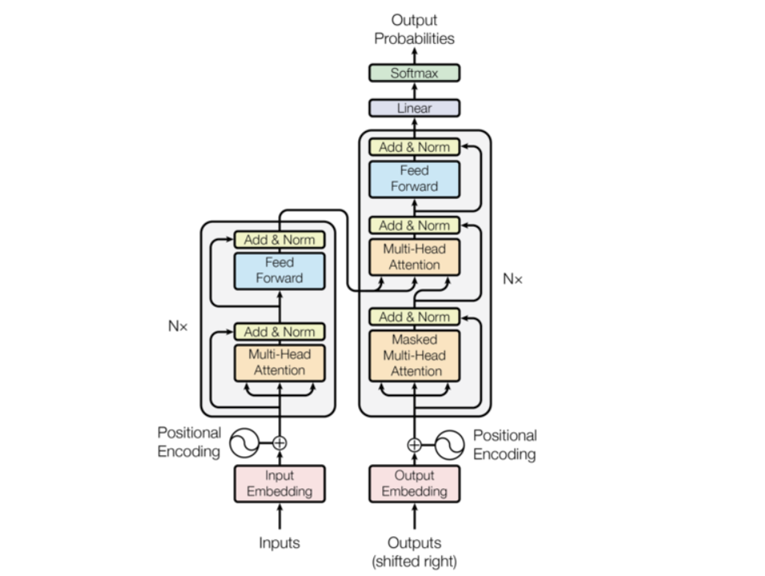
整体上，Transformer 是一个 Encoder-Decoder 的对称结构，左边读、右边写。下面逐层拆解每个组件。
Encoder
Encoder 的每一层结构完全相同，由两个子层组成：
子层一：Multi-Head Self-Attention。Q、K、V 全部来自同一个序列（自己问自己）。它的任务是让每个 token 去感知整个句子里其他所有 token 的信息，重新给自己赋予语境含义。每一层做完之后，每个 token 的向量都已经"融合"了上下文。
子层二：Feed-Forward Network（FFN）。独立作用于每个位置的向量，做非线性变换。它不负责 token 之间的交流，专注于对单个向量做深度特征提取。
每个子层之后都有 Add & Norm，即残差连接加上层归一化，防止梯度消失。
经过 \(N\) 层堆叠之后，Encoder 输出一组富含语义的向量序列，这组向量的 K 和 V 会被送到 Decoder 的每一层。
Decoder
Decoder 每层比 Encoder 多一个子层，共三个：
子层一：Masked Multi-Head Self-Attention。和 Encoder 的 Self-Attention 几乎一样，关键区别是加了 Causal Mask——生成第 \(t\) 个词时，只允许看到位置 \(1\) 到 \(t-1\) 的词，不能看未来。这保证了自回归（autoregressive）生成的合法性。
子层二：Cross-Attention。这是 Encoder 和 Decoder 唯一的连接点。Q 来自 Decoder 当前层，K 和 V 来自 Encoder 的最终输出。直觉上，Decoder 在问："我现在要生成这个词，应该重点参考输入序列里的哪些位置？" Cross-Attention 的重要性在文生图里会更突出——文字信息正是通过这里注入图像生成过程的。
子层三：FFN。同 Encoder，对每个位置做独立的特征变换。
最终，Decoder 的输出经过一个线性层和 Softmax，得到词表上的概率分布，采样出下一个 token，然后把这个 token 作为新的输入再喂回 Decoder——这个循环就是自回归生成。
残差连接
注意图中每个子层两侧的虚线——那是残差连接。无论信息经过 Attention 还是 FFN 如何变换，原始输入都会被直接加回来。这个设计让整个深层网络在反向传播时梯度始终有一条"高速公路"可以走，是堆叠几十层成为可能的根本原因。
2 核心机制
2.1 自注意力机制
好，Self-Attention 是整个 Transformer 的心脏，我们从直觉到数学到 Shape 完整走一遍。点击不同 token 可以看到它的注意力分布。"银行"这个词之所以能被理解为金融含义而非河岸，就是因为它对"取"和"钱"分配了很高的权重，通过加权求和把这两个 token 的语义融入了自己的向量里。
Q、K、V矩阵
每个 token 的向量 \(x\) 经过三个独立的线性变换，变成三个新向量：
三个矩阵 \(W^Q, W^K, W^V\) 的参数是训练出来的。三个向量各有分工：
- Q（Query）：我这个 token，想去搜索什么信息？
- K（Key）：我这个 token，能被搜索到的标签是什么？
- V（Value）：如果你真的关注我，你能从我这里拿走的实际内容是什么？
一个类比：图书馆检索系统。Q 是你输入的搜索词，K 是每本书的书名标签，V 是书里的实际内容。搜索词和书名越匹配（点积越大），这本书的内容被加权进结果的比例就越高。
完整计算流程四步流程，每步都有明确的几何意义：
① 线性变换：把每个 token 的向量 \(x\) 分别投影成 Q、K、V 三个方向。这一步给了模型学习"如何查询、如何被查询、如何提供内容"的自由度。
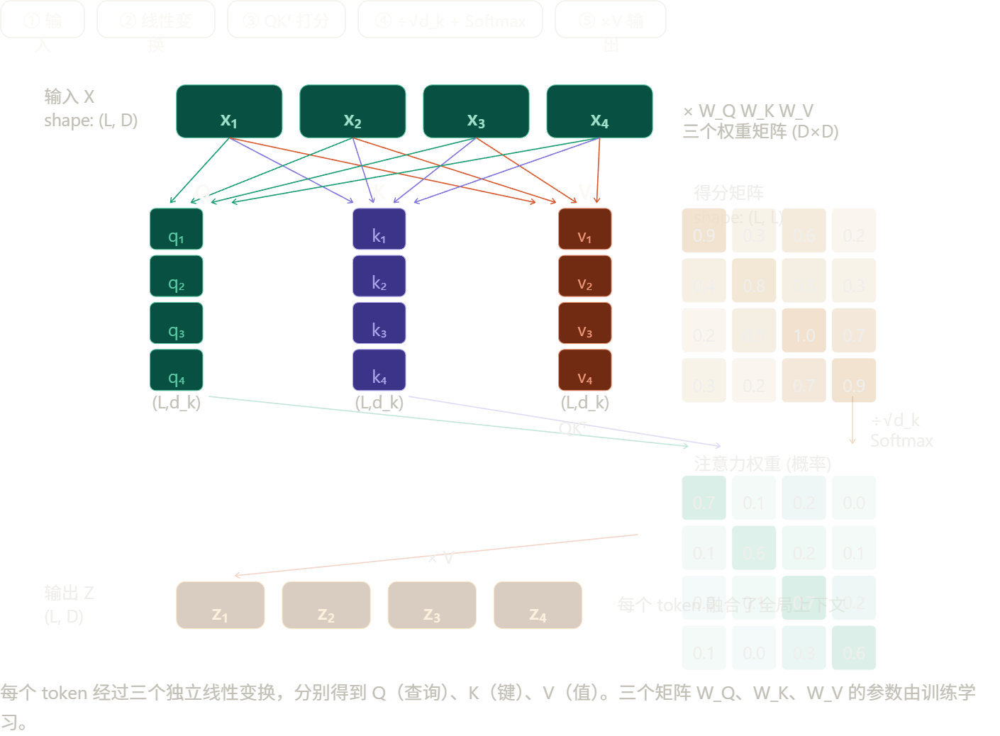
② 点积打分：\(QK^T\) 让每一对 token 之间产生一个相似度分数，结果是一个 \(L \times L\) 的矩阵——记录了句子里所有 token 两两之间的关联强度。除以 \(\sqrt{d_k}\) 防止数值过大导致 Softmax 饱和。
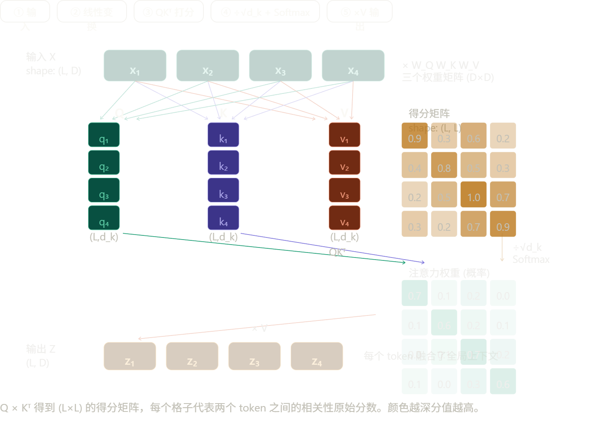
③ Softmax 归一化：把原始分数变成概率分布，所有位置的权重加和为 1。现在这个矩阵的每一行就是"当前 token 应该以多大比例关注其他每个 token"。
④ 加权求和：用这组权重对 V 做加权平均，得到最终输出。每个 token 的输出向量，本质上是整个句子所有 token 的语义内容按注意力权重混合后的结果。
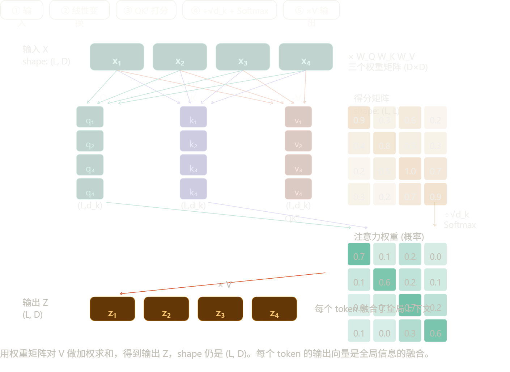
Multi-Head：为什么要分多个头
单头 Attention 每次只能学到一种关联模式。但语言里同时存在多种不同类型的关系——有的头学语法依存（主谓宾），有的头学指代关系（"他"→"张三"），有的头学局部搭配（"银行"→"取钱"）。多头的机制很简单：把 \(D\) 维向量拆成 \(H\) 份，每份 \(d_k = D/H\) 维，每个头用自己独立的 \(W^Q, W^K, W^V\) 在低维空间里做 Attention，最后把 \(H\) 个头的结果拼接（Concat）起来，再过一个线性投影还原回 \(D\) 维。
计算代价几乎不变（总参数量一样），但表达能力大幅提升——模型可以同时在多个子空间里学习不同类型的关联，而不是把所有信息压缩进一种关联模式。
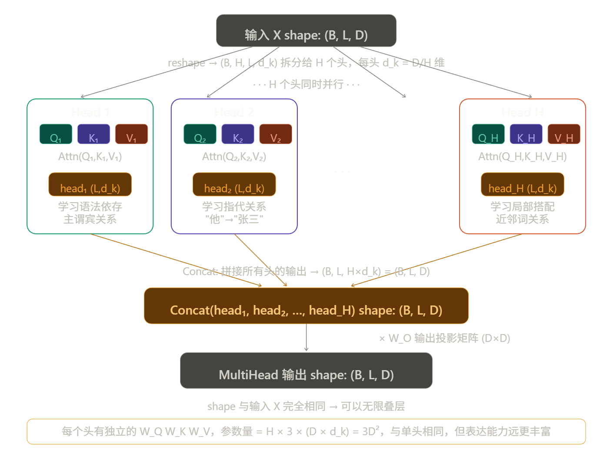
Note
reshape 只是把整体投影结果按维度切片，给每个头分配计算区域，本身并不强制差异。真正的差异来自独立参数 + 随机初始化，再由训练过程中的梯度压力把各头推向不同的特征方向。实际上已有研究（如 BERT 的注意力可视化实验）证实了这一点——不同头确实自发学到了语法依存、指代关系、局部搭配等不同类型的关联。
Self-Attention 的三大优势
与 RNN 相比，Self-Attention 做到了三件 RNN 做不到的事：
1. 动态语境化：同一个词在不同句子里的向量不一样。"银行"在"去银行取钱"和"坐在河岸边"里会被加权成完全不同的语义向量。
2. 全局 \(O(1)\) 连接：任意两个 token 之间只需要一次点积就能建立关联，不管它们距离多远。RNN 要传递 1000 步才能让首尾词产生关联，信息会衰减。
3. 完全并行：整个 \(QK^T\) 矩阵乘法一次性完成，不存在时序依赖，GPU 可以把所有位置同时算完。这是大规模预训练成为可能的工程基础。
代价只有一个：注意力矩阵是 \(L \times L\) 的，序列越长，显存占用越大。这也是为什么处理长序列（比如高分辨率图像的 patch 序列）时需要 Flash Attention 等优化——这个细节在文生图里非常重要，后面会讲到。
2.2 前馈网络
前馈网络（FFN）是 Transformer 里存在感最低、但参数量最大的模块。先建立直觉，再看结构。
直觉：Attention 和 FFN 的分工
一个常被引用的比喻：Attention 是路由器，FFN 是数据库。
Attention 做的事是"哪些 token 应该互相交流"——它在 token 之间传递信息，让每个位置的向量融合上下文。但 Attention 本身并不做深度的特征变换，它的输出本质上还是输入向量的加权线性组合。
FFN 做的事是"交流完之后，每个 token 的向量应该变成什么"——它对每个位置独立做非线性变换，是模型存储和提取"知识"的地方。研究者通过实验发现，如果你强行修改 FFN 某些神经元的权重，模型对特定事实的记忆会随之改变（比如"北京是中国的首都"这类知识就存在 FFN 里）。
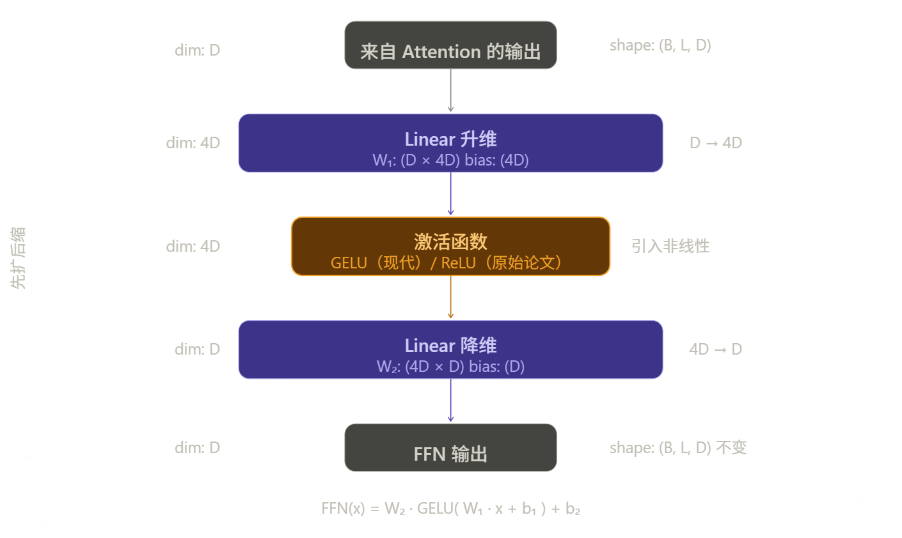
结构极简：两层线性变换，中间夹一个激活函数，输入输出维度都是 \(D\)，中间膨胀到 \(4D\)。
为什么先扩维到 4D，再压回 D？
这个"先扩后缩"的设计是有意为之的，原因有两个层次：
非线性需要足够宽的空间才能发挥作用。 激活函数（GELU/ReLU）对每个维度独立作用。如果只在 \(D\) 维空间里做，可激活的神经元太少，表达能力有限。扩展到 \(4D\) 后，有更多的"槽位"可以被选择性激活，模型可以同时检测更多种类的特征模式。
4D 这个超参数是经验值，不是推导出来的。 原始论文直接用了 4 倍，后来大量实验证明这个比例效果稳定。现代一些模型（如 LLaMA）用了不同的比例，但量级大致相同。
FFN 是 Transformer 参数量的主体
这一点很多人没意识到。以 \(d_{model} = 512\) 为例：
- Attention 的参数：\(4 \times D^2 = 4 \times 512^2 \approx 1M\)（\(W^Q, W^K, W^V, W^O\) 各一个）
- FFN 的参数：\(2 \times D \times 4D = 8 \times 512^2 \approx 2M\)
FFN 的参数是 Attention 的两倍。对于一个 32 层的模型，FFN 占全模型参数量约 2/3。GPT-3 的 1750 亿参数，大部分都在 FFN 里。
一个关键细节：FFN 对每个 token 独立计算
FFN 的每个 token 是完全独立处理的——\(z_1\) 不会影响 \(z_2\) 的计算，反之亦然。所有位置可以完全并行。
但有一点值得注意：虽然各 token 独立计算，它们用的是同一套 \(W_1, W_2\) 权重。这说明 FFN 学到的是"对任意向量做什么样的特征变换"，而不是"对第几个位置做什么"——位置无关的通用知识。
GELU vs ReLU：为什么现代模型换掉了 ReLU
原始 Transformer 论文用 ReLU，现代模型（BERT、GPT-2 之后）几乎全换成了 GELU。
ReLU 的问题在于它是硬截断：输入 \(\leq 0\) 时输出恒为 0，梯度完全消失，这个神经元就"死掉"了。GELU 是软门控，接近 0 的输入会得到一个很小但不为零的输出，梯度更平滑，训练更稳定。
2.3 交叉注意力
交叉注意力和自注意力的计算公式完全相同，唯一的区别是 Q、K、V 的来源不同。先建立这个对比，再看它在文生图里的具体作用。
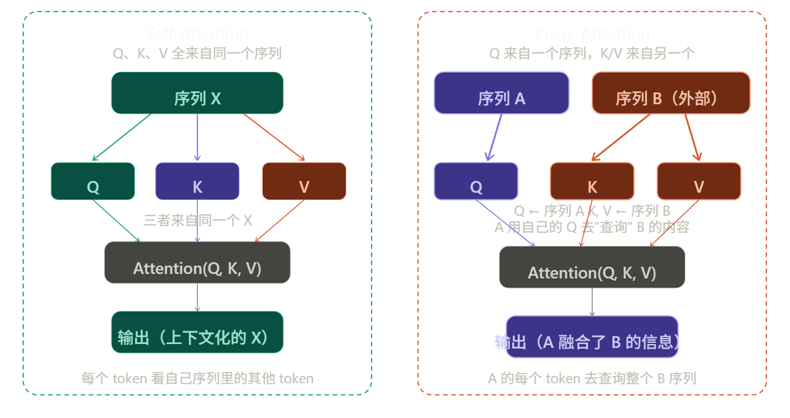
序列 A 出 Q，序列 B 出 K 和 V。A 的每个 token 用自己的 Q 去和 B 的所有 K 做点积打分，再对 B 的 V 做加权求和。最终结果的 shape 和 A 一致，但每个向量里都融入了 B 的信息。
在原始 Transformer（机器翻译）里的角色
在 Encoder-Decoder 架构里，A 是解码器当前的状态，B 是编码器的输出。
直觉上就是：Decoder 每生成一个词，都要回头问一遍 Encoder "我现在应该重点参考输入句子的哪个部分？"
翻译"I love you"→"我爱你"时，生成"爱"这个字的时候，Cross-Attention 会让 Decoder 的 Q 重点关注 Encoder 输出里"love"对应的 K/V，权重最高，从而把"love"的语义拉进当前生成步骤。
文字注入图像的核心机制
这是 Cross-Attention 在现代最重要的应用场景。以 Stable Diffusion 为例：
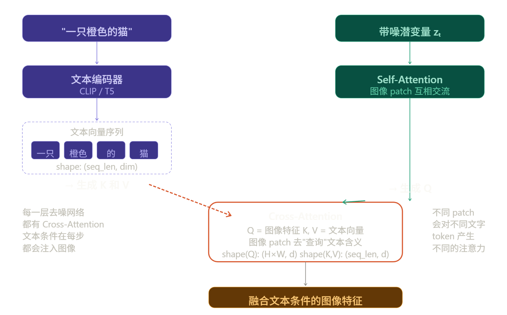
在 Stable Diffusion 的去噪网络（UNet/DiT）里：
Q 来自图像的 patch 特征——去噪过程中，每个图像区域的特征向量负责出 Q，问的是："我这个区域应该长什么样？"
K 和 V 来自文本编码器的输出——Prompt 经过 CLIP 或 T5 编码后，得到一个 token 向量序列，这个序列固定地作为 K 和 V 提供给所有去噪步骤。
于是，图像每个 patch 的 Q 去和所有文本 token 的 K 做点积打分，分数高的文本 token 的 V 就会被重点加权进来。"猫"这个区域的 patch 会对"猫"这个文字 token 分配高权重，"橙色"区域的 patch 会对"橙色"分配高权重——这就是文字"控制"图像内容的底层机制。
一个维度细节值得关注
Cross-Attention 里 Q 和 K/V 的序列长度可以完全不同，这是和 Self-Attention 的关键差异：
| Q 的序列长度 | K/V 的序列长度 | 输出长度 | |
|---|---|---|---|
| Self-Attention | \(L\) | \(L\)（同源） | \(L\) |
| Cross-Attention | \(L_A\)（图像 patch 数） | \(L_B\)（文本 token 数） | \(L_A\) |
注意力矩阵的 shape 变成了 \((L_A \times L_B)\)——图像里每个 patch 对每个文字 token 的关注程度。输出的 shape 跟着 Q 走，始终是 \((L_A, d)\)，和图像特征序列保持一致。
这个不对称性正是 Cross-Attention 能"桥接两个不同模态"的几何基础——Q 和 K/V 可以来自完全不同长度、甚至不同模态的序列，最终输出只影响 Q 那一侧的表示。
2.4 残差连接与归一化
先看它们在整个 Block 里的位置，再逐个拆解。每个子层（Attention 或 FFN）结束后都有固定的两步：加残差，然后归一化。两件事独立解决两个不同的问题，分开讲。
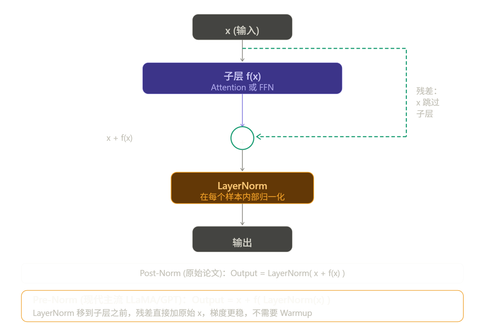
残差连接
核心公式就是那个加号：\(\text{output} = x + f(x)\)
为什么这一个加号如此重要？
反向传播时，梯度需要从输出端一路传回输入端。经过每一层都要乘以该层的导数。一旦某层的导数很小，梯度就会指数级缩小，传到浅层时趋近于零——这就是梯度消失，模型的前几层根本学不动。
有了残差连接，求导时多了一条路：
那个 \(+1\) 就是高速公路。无论 \(f(x)\) 的梯度多小，整条链路的梯度至少是 1，永远不会消失。这就是 ResNet 和 Transformer 能堆几十上百层的根本原因。
第二个作用：恒等映射的自由
如果某一层已经学得够好了，最优解是"什么都不改"。但让网络直接学出 \(f(x) = x\) 很难。有了残差，只需要让 \(f(x) \approx 0\)——把参数都初始化趋近于零就行了，这比学恒等映射容易得多。所以深层网络加了残差之后，"多余的层"不会拖累性能，而是自动退化成透明通道。
LayerNorm
LayerNorm 解决的是另一个问题：训练过程中向量的数值分布会漂移，导致后续层的输入越来越难处理。
它的操作很简单——对每个样本的每个向量，在特征维度上做标准化：
其中 \(\mu\) 和 \(\sigma\) 是这个向量自身所有维度的均值和标准差，\(\gamma\) 和 \(\beta\) 是可学习的缩放和平移参数。
和 BatchNorm 的根本区别是归一化的维度不同：BatchNorm 沿列方向归一化——跨所有样本，对同一个特征维度算均值和方差。这在 CV 里没问题，但文本序列长度不等，batch 里不同样本的同一个"位置"语义完全不同，而且 batch size 小时统计不稳，推理时单条样本 BN 直接失效。
LayerNorm 沿行方向归一化——在单个样本内，对它自己所有特征维度算均值和方差。完全不依赖其他样本，序列长短无所谓，推理和训练行为完全一致。这是 NLP 选 LN 的根本原因。
Pre-Norm vs Post-Norm
这两种变体的差异看起来很小，但训练行为差异显著。
Post-Norm（原始论文）
LayerNorm 在加完残差之后做。输出经过归一化，数值很稳定。但问题在于：梯度反传时要穿过 LayerNorm 再到残差分支，初始阶段梯度不稳，必须配合学习率 Warmup 才能收敛。
Pre-Norm（现代主流）
LayerNorm 在子层之前做，归一化后的输入进 Attention/FFN。残差直接加原始的 \(x\)，梯度回传时那条 \(+1\) 的高速公路完全畅通，不经过任何 LayerNorm。训练更稳定，不需要 Warmup，更容易扩展到很深的网络。LLaMA、GPT-2 之后几乎所有大模型都用 Pre-Norm。
2.5 位置编码 (Positional Encoding)
Sinusoidal 位置编码
给每个位置 \(pos\)，构造一个和词向量同维度的位置向量，然后直接相加：
偶数维度用 \(\sin\)，奇数维度用 \(\cos\)，分母 \(10000^{2i/d}\) 让不同维度有不同的波长——低维度变化快（捕捉近距离关系），高维度变化慢（捕捉远距离关系）。
低维度（图顶部）变化很快，每隔几个位置就完成一个周期；高维度（图底部）变化极慢，几乎像一个渐变。不同位置的编码向量在这个高维空间里互不相同，且相邻位置的编码向量比远距离的更相似——这就把"距离"的概念编码进去了。
Sinusoidal 有一个优雅的性质：位置 \(pos+k\) 的编码可以用 \(pos\) 的编码线性表示出来，这意味着模型可以从相对位置差中学到模式，而不只是绝对位置。但它是固定的（不可学习），而且处理超出训练长度的序列时会退化。
RoPE 旋转位置编码（现代 LLM 主流）
RoPE 的思路完全不同。它不把位置信息加到词向量上，而是在计算 Attention 时，把位置信息旋转进 Q 和 K 里。
核心想法：让两个 token 之间的注意力分数，只依赖它们的相对位置差 \(m - n\)，而不是各自的绝对位置。RoPE 把每对相邻维度 \((x_{2i}, x_{2i+1})\) 看作一个二维平面上的向量，对位置 \(m\) 的 token 旋转角度 \(m\theta_i\)：
旋转矩阵有一个数学性质：两个旋转向量的点积，只和它们的旋转角之差有关。所以 \(q_m \cdot k_n\) 的结果只依赖 \(m - n\)，完全不依赖 \(m\) 和 \(n\) 各自是多少。这从根本上把"相对距离"编码进了注意力计算。
3 数据流
先看一下原文。原文的逻辑是对的，但有几处值得补充和修正：
问题一：位置编码的描述不够准确。Sinusoidal 是"相加"，但 RoPE 不是加位置向量，而是在 Attention 计算时旋转 Q 和 K，两者时机不同，不能并列写在同一步。
问题二：逐层加工只写了 Attention 和 FFN，漏掉了残差连接和 LayerNorm，而这两个是每个 Block 里实际发生的步骤。
问题三：整体是 Decoder-only 的视角（提到了 LLaMA），但没有写最后的输出步骤——逐层加工完之后还有 Linear + Softmax 产生概率分布，再采样出 token，这个自回归循环是生成模型的核心。
下面重写一版，保留原有风格，补全这几处：
数据流
以 Decoder-only 模型（如 LLaMA）生成一段文字为例，完整走一遍。
第一步：分词（Tokenization）
输入文本先被切分成 Token，每个 Token 在词表里有唯一的整数 ID。
- 输入：
"大模型面试" - 分词后：
["大", "模型", "面试"] - 查表得 ID：
[102, 45, 892]
Token 不一定是整个词，现代分词器（BPE）会把低频词切成子词，比如 "Transformer" 可能被切成 ["Trans", "former"]。
第二步：词嵌入（Embedding Lookup）
模型有一个可学习的 Embedding Matrix，shape 为 \((V \times D)\)，\(V\) 是词表大小，\(D\) 是向量维度。
用 Token ID 作为行索引，取出对应的行向量。[102, 45, 892] 变成三个 \(D\) 维向量，拼成矩阵后 shape 是 \((L \times D)\)，\(L\) 是序列长度。这是每个 token 的"初始语义向量"，此时还没有位置信息，也没有上下文。
第三步：注入位置信息
这一步因模型架构不同而不同，需要区分两种情况：
Sinusoidal / 可学习位置编码（BERT、原始 Transformer）：构造一个同 shape 的位置向量矩阵，直接与词向量相加，得到带位置信息的输入向量。操作在进入 Attention 之前一次性完成。
RoPE（LLaMA、Qwen 等现代模型）：不在这里相加，而是在每一层 Attention 计算时，把位置角度旋转进 Q 和 K 里。词向量本身不变，位置信息体现在 Attention 的打分过程中。
第四步：逐层加工（Transformer Block × N）
携带位置信息的向量矩阵进入 \(N\) 个堆叠的 Block，每个 Block 内部的执行顺序如下（以 Pre-Norm 为例）：
具体来说：
- LayerNorm：先对 \(x\) 归一化，稳定数值范围。
- Self-Attention：每个 token 的 Q 去和所有 token 的 K 打分，加权聚合 V，融合全局上下文。"模型"这个词会重点关注"大"，理解自己属于"大模型"这个语境。
- 残差相加：把 Attention 的输出加回原始 \(x\)，梯度高速公路保持畅通。
- LayerNorm + FFN + 残差：再做一次归一化，经过两层线性变换提取深层特征，再加残差。
经过 32 层或更多层的迭代，初始的平凡向量逐渐融入越来越丰富的语义，最终每个位置都携带了全局上下文信息。
第五步：输出头（Linear + Softmax）
最后一个 Block 的输出向量经过一个线性层，把 \(D\) 维向量映射回词表维度 \(V\)，再经过 Softmax 得到词表上的概率分布。
取最后一个位置的概率分布，采样（或取 argmax）得到下一个 token，把它拼接到输入序列末尾，重新走一遍第一步到第五步——这个循环就是自回归生成，每次生成一个 token，直到遇到终止符为止。
整体的数据形状变化可以这样追踪：
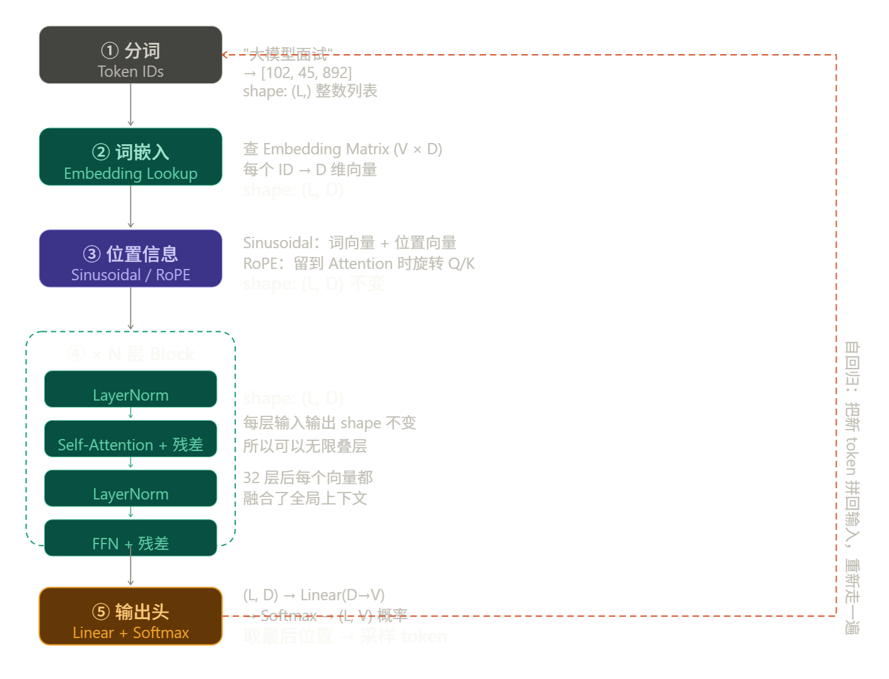
右边的红色虚线箭头是整个生成过程的灵魂——自回归循环。每次生成一个 token，拼到序列尾部，重新从第一步走到第五步，再生成下一个。生成 100 个 token 就要完整走 100 遍这条流水线。
原笔记的核心逻辑没有问题，主要补了三处：位置编码区分了 Sinusoidal 和 RoPE 的不同时机；Block 内部加入了 LayerNorm 和残差的位置；补全了输出头和自回归循环这个收尾步骤。
4 手算一遍 Shape
超参数设定：
| 符号 | 含义 | 值 |
|---|---|---|
| \(B\) | batch size | 2 |
| \(L\) | 序列长度 | 10 |
| \(D\) | 模型维度 | 512 |
| \(H\) | 注意力头数 | 8 |
| \(d_k\) | 每头维度，\(D/H\) | 64 |
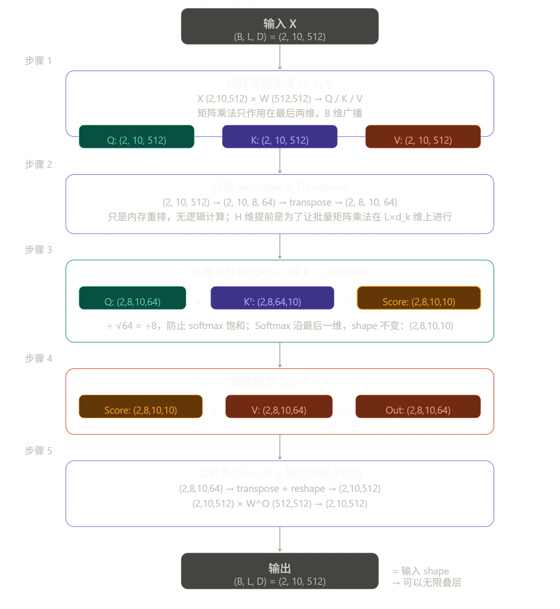
步骤 1：线性变换生成 Q、K、V
\(W^K, W^V\) 同理。矩阵乘法只作用在最后两维，\(B\) 维自动广播。此时 Q、K、V 的 shape 和输入 \(X\) 完全相同。
步骤 2：分头 Reshape + Transpose
把 512 维切成 8×64，再把 \(H\) 维提到 \(L\) 前面。这一步是纯内存重排，没有任何数值计算。把 \(H\) 维提前的原因：后续的矩阵乘法需要在 \((L \times d_k)\) 这两个维度上进行，\(B\) 和 \(H\) 都作为"批次"维度广播。
步骤 3：打分 \(QK^T\)，缩放，Softmax
矩阵乘法只在最后两维发生：\((L, d_k) \times (d_k, L) = (L, L)\)。前两维 \((B, H)\) 各自独立，互不干扰。
得到的 \((10 \times 10)\) 矩阵，每一行是一个 token 对所有 token 的相关性分数。
然后 \(\div \sqrt{d_k} = \div 8\)，防止点积数值过大导致 Softmax 饱和。再沿最后一维做 Softmax，shape 不变，仍是 \((2,8,10,10)\)，但每行变成了概率分布，加和为 1。
步骤 4：加权聚合 \(\times V\)
\((L, L) \times (L, d_k) = (L, d_k)\)，每个 token 得到一个融合了全局上下文的新向量。
步骤 5：合并头 + 输出投影 \(W^O\)
先把 \((B,H,L,d_k)\) 转置回 \((B,L,H,d_k)\)，再 reshape 成 \((B,L,D)\)。此时 \(H \times d_k = 8 \times 64 = 512 = D\)，各头的信息被拼接在一起。最后过 \(W^O\) 做线性混合，让各头之间的信息可以互相作用。
最终 shape 汇总：
| 步骤 | 操作 | 输出 shape |
|---|---|---|
| 输入 | — | \((2,\ 10,\ 512)\) |
| 步骤 1 | \(\times\ W^{Q/K/V}\) | \((2,\ 10,\ 512)\) |
| 步骤 2 | Reshape + Transpose | \((2,\ 8,\ 10,\ 64)\) |
| 步骤 3 | \(QK^T \div\sqrt{d_k}\) + Softmax | \((2,\ 8,\ 10,\ 10)\) |
| 步骤 4 | \(\times\ V\) | \((2,\ 8,\ 10,\ 64)\) |
| 步骤 5 | Concat + \(\times\ W^O\) | \((2,\ 10,\ 512)\) |
输入和输出 shape 完全一致，这就是 Transformer 能叠几十层的几何原因——每一层都是"吃进 \((B,L,D)\)，吐出 \((B,L,D)\)"的黑箱，可以无限串联。
5 架构权衡
原始 Transformer 是为机器翻译设计的完整 Encoder-Decoder 结构。后来研究者发现，根据任务性质只保留一侧往往效果更好、成本更低。目前主流的三种变体各有不同的注意力模式，这是它们能力差异的根本来源。
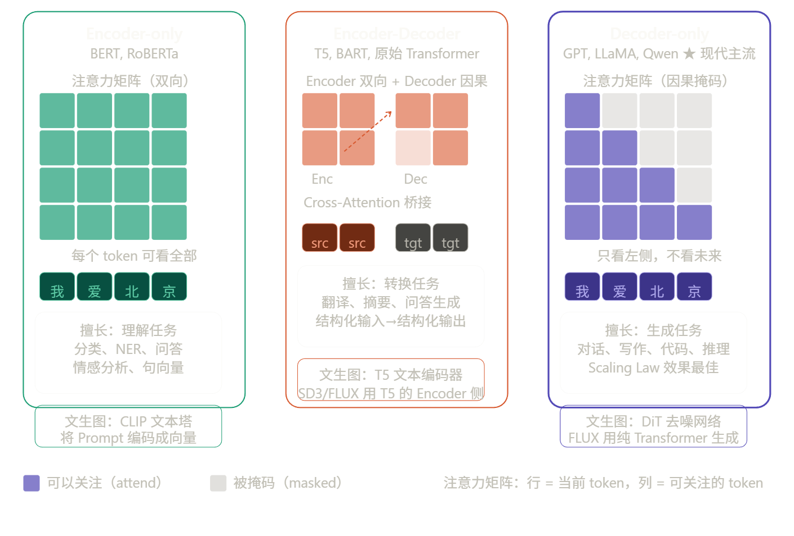
三种架构的本质差异就是注意力矩阵的形状：Encoder-only 是完整的实心矩阵（双向），Decoder-only 是下三角矩阵（因果掩码），Encoder-Decoder 是两者的组合。
三种架构详解
Encoder-only（BERT 系）
每个 token 的注意力可以同时看到左边和右边，这叫"双向注意力"。因为能看到完整上下文，每个位置的向量表征非常精准。但正因为能看到未来，它无法自回归生成——你不能一边生成第 5 个词，一边让它看到第 6 个词。所以它不适合做生成任务，擅长的是理解类任务：分类、NER、相似度计算、抽取式问答。
在文生图里，CLIP 的文本塔就是一个 Encoder-only 结构，把 Prompt 编码成向量序列，作为 Cross-Attention 的 K 和 V。
Encoder-Decoder（T5、BART）
两侧分工明确：Encoder 用双向注意力读懂输入，Decoder 用因果掩码逐步生成输出，两者之间靠 Cross-Attention 桥接。这个设计最适合"输入和输出是两个不同序列"的任务，比如翻译（源语言→目标语言）、摘要（长文→短文）。
在文生图里，FLUX 和 SD3 使用的 T5-XXL 就是 Encoder-Decoder 架构，但只用它的 Encoder 侧来提取文本特征，Decoder 侧丢弃不用。T5 的 Encoder 对复杂语义的理解能力比 CLIP 更强，所以新一代文生图模型用 T5 替代或补充 CLIP。
Decoder-only（GPT、LLaMA、Qwen）
只有一个带因果掩码的自注意力，每个 token 只能看到它左边的所有 token。训练目标是预测下一个词，推理时逐步自回归生成。
为什么它在 Scaling Law 上最好？ 原因有两个：一是结构简单，参数利用率最高，同等参数量下计算效率更好；二是自回归训练目标（预测下一个 token）和任何形式的生成任务天然对齐，只需要把问题和答案拼成一个序列就能训练，不需要为每类任务设计不同的目标函数。数据越多、参数越大，它涌现出的能力越强。这是 GPT-4、LLaMA 3 全面转向 Decoder-only 的根本原因。
三种架构的选择原则
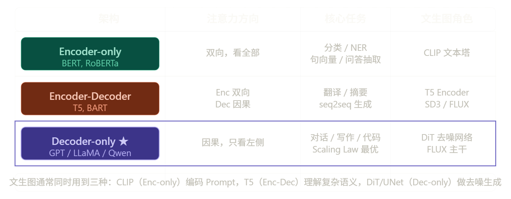
最后一行是文生图的关键视角：现代文生图系统（FLUX、SD3）往往同时用到三种架构。CLIP 的 Encoder-only 负责把 Prompt 快速映射成视觉-语义对齐的向量；T5 的 Encoder 侧负责理解复杂的长句子语义；DiT 的 Decoder-only 风格主干负责在潜空间里逐步去噪生成图像，三者通过 Cross-Attention 组合在一起。
后续需要了解的基础组件
要理解文生图，Transformer 之后还需要掌握这三个独立的模块：
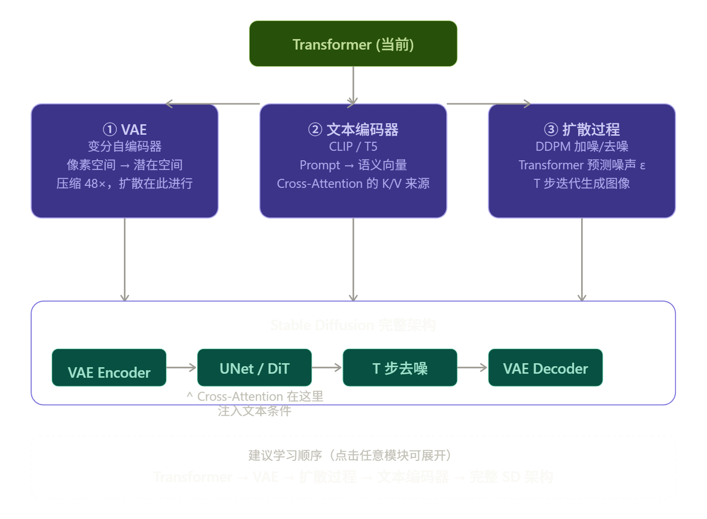
三个模块各自独立，但最终在 Stable Diffusion 里汇合，简单说明各自的核心学习重点：
① VAE（变分自编码器）——重点是"为什么要压缩"而不是"怎么实现压缩"。关键直觉：直接在 \(512\times512\) 像素上跑扩散，Attention 的 \(O(L^2)\) 会让计算量爆炸。VAE 把图像编码成 \(64\times64\times4\) 的潜空间（latent space），体积缩小 48 倍，所有的扩散和去噪都在这个压缩空间里进行，最后再 decode 回像素。学习重点是 Encoder/Decoder 结构和 KL 散度正则项的直觉。
② 文本编码器（CLIP / T5）——重点是理解"它输出的是什么"，而不是"它内部怎么训练"。输出是一个形状为 [seq_len, dim] 的向量序列，每个位置对应一个 token 的语义向量。这个序列直接作为 Cross-Attention 的 K 和 V，告诉图像生成网络"你应该往什么方向生成"。SDXL 同时使用 CLIP 和 OpenCLIP 两个编码器，理解它们的拼接方式也是一个考点。
③ 扩散过程（DDPM）——重点是"Transformer/UNet 在整个流程里的位置"。前向过程（加噪）是数学上固定的，一步可以算出任意时刻 \(t\) 的带噪图像。反向过程（去噪）才是神经网络负责的部分——网络的输入是带噪的潜变量 \(z_t\) 和时间步 \(t\)，输出是对噪声 \(\epsilon\) 的预测，然后用这个预测把噪声一步步去掉。Cross-Attention 就嵌在这个去噪网络的每一层里。
掌握这三块之后，Stable Diffusion 的整体架构就能完整串起来了。之后 ControlNet、LoRA 之类的进阶话题也都是在这个基础上加条件或者修改参数的方式，学起来会容易很多。